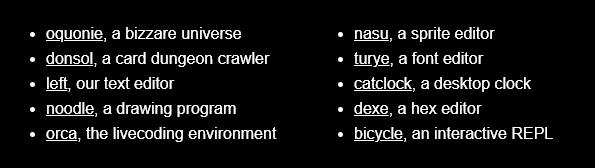
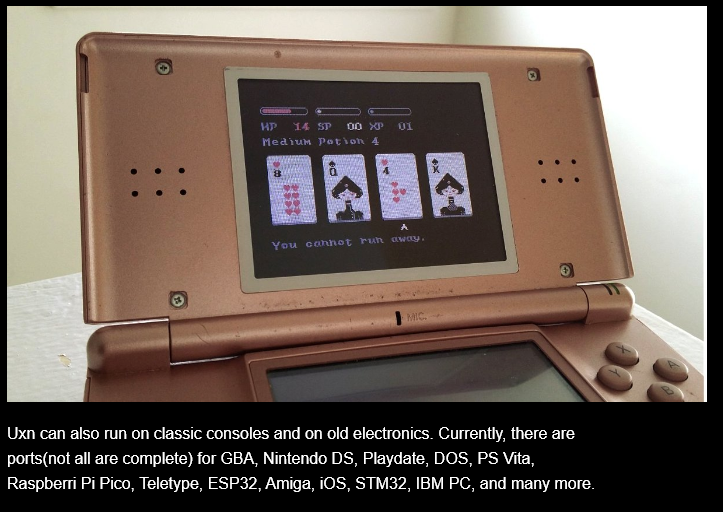

Uxn is an entirely virtual emulator. It emulates a specific set of instructions that is not based on real life hardware. It agrees on functions and methods to run ROMS. no knowledge of the code in the roms is needed to run them.
An interesting thing about this emulator is it's ability to run on many different systems. It has it's own set of instructions built in to emulate itself. It comes with it's own programming language.  It has the ability to run any of the roms created for it. It would be an interesting project to fully work in Uxn for a week, only able to use the programs made for it.  it can run on a ds! among other things.
Uxn is cool but it's only one of the many 100 rabbits projects. check out their website here. some very cool stuff.
they build all of their projects to work offline and without maintenance from them. Permacomputing. They target hardware from the last 20 years to promote tech-recycling and the continued use of old computers. This is something I strongly agree with.
When I was younger all of my tech was secondhand and old. I used old laptops and monitors and to prevent tech from sitting and collecting dust. I used an old windows 98 tower to run a minecraft server on linux for some of my friends.
personally i'd change nothing about this project. maybe more systems it can run on but it already can run on so many. The most compelling part of this project is the tiny programs made for specific jobs. No waste of system resources, one app made for one thing and that's it, no unnecessary features. You want another feature? add it yourself, it's open source and comprehensive documentation makes it as easy as banging your head against the keyboard until it works. Jokes aside this model of computing is the way to go. especially if you live on a boat with limited power and internet!
Ok bye!